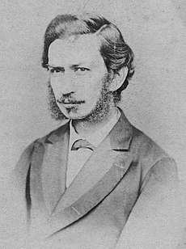
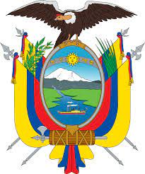

| Juan León Mera |  |
| Presidente de la Cámara del Senado del Ecuador |  |
| Predecesor | Luis Cordero Crespo |
| Sucesor | Camilo Ponce |
| Información personal | |
| Nacimiento | 28 de junio de 1832 Ver y modificar los datos en Wikidata Ambato, Tungurahua, Ecuador |
| Fallecimiento | 13 de diciembre de 1894, (62 años) Ambato, Tungurahua, Ecuador |
| Nacionalidad | Ecuatoriana |
| Familia | |
| Padres | Pedro Antonio Mera Josefa Martínez Vásconez |
| Información profesional | |
| Ocupación | Escritor Político Pintor
|
| Movimientos | Indigenista (literatura) Romanticismo (pintura) Costumbrismo (pintura).
|
| Obras notables | Cumandá |
| Partido político | Conservador |